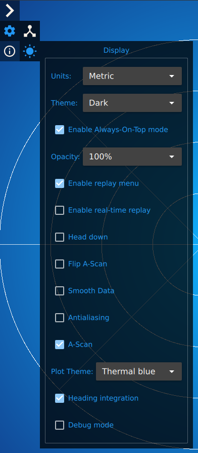

Display Settings

Menu Items
-
Units: Select the units (Metric [meters] or Imperial [feets]) for the application to display
-
Theme: Select the application menu theme (Light or Dark)
-
Enable Always-On-Top mode: The application will be over (in front of) all other windows.
-
Opacity: Select the application opacity. Used to partially view content (e.g. video stream) behind the application window.
-
Enable Replay Menu: Enable the Replay Menu
-
Enable Real-Time Replay: Shows playback as it was recorded (ie what you would see from a screen recording when the data was captured). Sets profile messages to display based on recorded timestamps, instead of using a constant period/update rate.
-
Head Down (Ping360 only): Flip the polar scan so the display is correct for a Ping360 that is positioned upside down (scanning head at the bottom).
-
Flip A-Scan: Flip between furthers/closest ping data at the top of the Return Plot.
-
Smooth Data: Filter the Waterfall data to smooth noise and fluctuations.
-
Antialiasing: Enable antialiasing in the Waterfall display rendering
-
A-Scan: Enable a display of the signal intensity of the latest ping (Return Plot).
-
Plot Theme: Select the color swath/gradient to use for the Waterfall display. Custom gradients can be created according to the custom gradients section.
-
Heading Integration (Ping360 only): Integrate with ROV compass reading to allow sonar display to account for ROV rotations.
-
Debug Mode: Enable Debug information and settings
Custom Gradients
The user can create his own gradients for the waterfall, for this, it's necessary to create a file that follow some rules inside Waterfall_Gradients folder.
- Filenames need to have .txt extension.
- Filenames will be used as gradient name.
- Filenames with underscores will be replaced with spaces.
- Lines that do not start with # will not be processed.
-
Color values need to follow:
#RGB(each of R, G, and B is a single hex digit)#RRGGBB#AARRGGBB#RRRGGGBBB#RRRRGGGGBBBB
There is a very good tool to help with gradient colours here.
-
First value will represent 0.0
- The last value will represent 1.0
- The value of any other color will be
1.0*((color position) - 1)/(number of colors)
This is an example of gradient file:
; Put this example in a file called `Gradient_test.txt` in **Waterfall_Gradients**.
#7f000000
#ffffff
#ff0000
Where #7f000000 is black with 50% transparency (low power signal - 0.0), #ffffff (average power signal - 0.5) is white and #ff0000 is red (max power signal - 1.0).